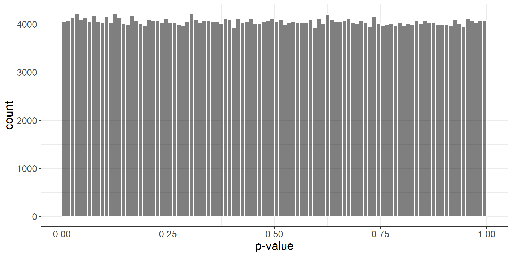
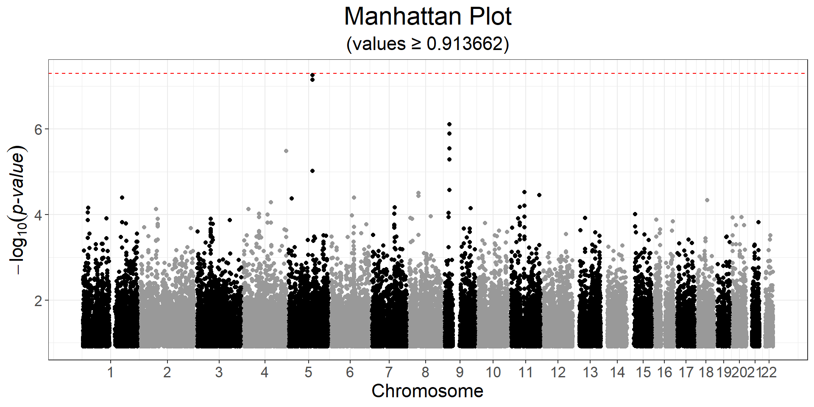
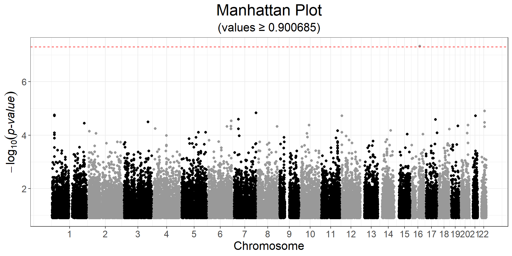

Chapter 5 Genome-Wide Association Study (GWAS)
In {bigstatsr}, you can perform both standard linear and logistic regressions GWAS, using either big_univLinReg() or big_univLogReg().
Function big_univLinReg() should be very fast, while big_univLogReg() is slower.
This type of association, where each variable is considered independently, can be performed for any type of FBM (i.e. it does not have to be a genotype matrix). This is why these two functions are in package {bigstatsr}, and not {bigsnpr}.
5.1 Example
Let us reuse the data prepared in 3.3 and the PCs in 4.4.
#> Loading required package: bigstatsrThe clinical data includes age, sex, high-density lipoprotein (HDL)-cholesterol (hdl), low-density lipoprotein (LDL)-cholesterol (ldl), triglycerides (tg) and coronary artery disease status (CAD).
For the set of covariates, we will use sex, age, and the first 6 PCs:
You probably should not account for other information such as cholesterol as they are heritable covariates, which can lead to collider bias (Aschard, Vilhjálmsson, Joshi, Price, & Kraft, 2015; Day, Loh, Scott, Ong, & Perry, 2016).
G <- obj.bigsnp$genotypes
y <- obj.bigsnp$fam$CAD
ind.gwas <- which(!is.na(y) & complete.cases(covar))To only use a subset of the data stored as an FBM (G here), you should almost never make a copy of the data; instead, use parameters ind.row (or ind.train) and ind.col to apply functions to a subset of the data.
Let us perform a case-control GWAS for CAD:
gwas <- runonce::save_run(
big_univLogReg(G, y[ind.gwas], ind.train = ind.gwas,
covar.train = covar[ind.gwas, ], ncores = NCORES),
file = "tmp-data/GWAS_CAD.rds")#> user system elapsed
#> 0.17 0.14 157.05
#> Code finished running at 2025-06-10 13:44:27 CESTThis takes about two minutes with 4 cores on my laptop. Note that big_univLinReg() takes two seconds only, and should give very similar p-values, if you just need something quick.

CHR <- obj.bigsnp$map$chromosome
POS <- obj.bigsnp$map$physical.pos
snp_manhattan(gwas, CHR, POS, npoints = 50e3) +
ggplot2::geom_hline(yintercept = -log10(5e-8), linetype = 2, color = "red") Here, nothing is genome-wide significant because of the small sample size.
Perform a GWAS for the other phenotypes, and look at the histogram, Q-Q plot and Manhattan plot.
Click to see solution
y2 <- obj.bigsnp$fam$hdl
ind.gwas2 <- which(!is.na(y2) & complete.cases(covar))
gwas2 <- big_univLinReg(G, y2[ind.gwas2], ind.train = ind.gwas2,
covar.train = covar[ind.gwas2, ], ncores = NCORES)
snp_manhattan(gwas2, CHR, POS, npoints = 50e3) +
ggplot2::geom_hline(yintercept = -log10(5e-8), linetype = 2, color = "red")
Some other example code:
- GWAS in iPSYCH; you can perform the GWAS on multiple nodes in parallel that would each process a chunk of the variants only
- GWAS for very large data and multiple phenotypes; you should perform the GWAS for all phenotypes for a “small” chunk of columns to avoid repeated access from disk, and can process these chunks on multiple nodes in parallel
- some template for {future.batchtools} when using Slurm
5.2 REGENIE
regenie (Mbatchou et al., 2021) is a C++ program for whole genome regression modeling of large genome-wide association studies.
It is developed and supported by a team of scientists at the Regeneron Genetics Center.
The method has the following properties:
It works on quantitative and binary traits, including binary traits with unbalanced case-control ratios
It can handle population structure and relatedness
It can process multiple phenotypes at once efficiently
For binary traits, it supports Firth logistic regression and an SPA test
It can perform gene/region-based tests (Burden, SBAT, SKAT/SKATO, ACATV/ACATO)
It can perform interaction tests (GxE, GxG) as well as conditional analyses
Meta-analysis of REGENIE summary statistics can be performed using REMETA
It is fast and memory efficient 🔥
It can provide some power boost
It supports the BGEN, PLINK bed/bim/fam and PLINK2 pgen/pvar/psam genetic data formats
It can be installed with Conda